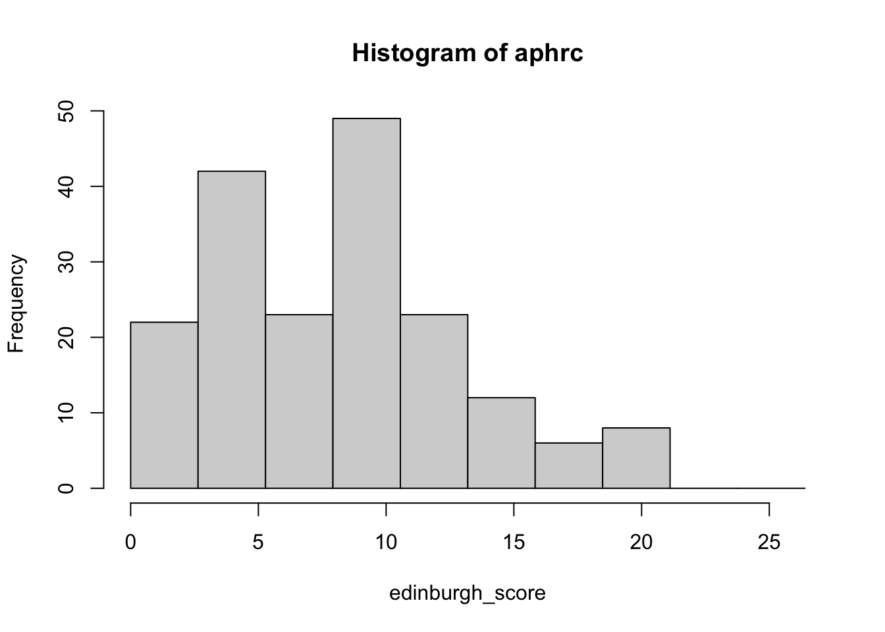

# Load required libraries
library(DSI)
library(DSOpal)
library(dsBaseClient)
library(dsOMOPClient)
library(dsOMOPHelper)
# Configure SSL settings (for self-signed certificates)
library(httr)
httr::set_config(httr::config(ssl_verifypeer = 0L, ssl_verifyhost = 0L))DataSHIELD OMOP Practical Exercises
Learning to explore and analyze OMOP data with DataSHIELD
Solution
Setup
First, let’s load the required libraries and configure SSL settings:
Exercise 1: Server Connection and Initial Data Exploration
Let’s connect to the mystery dataset and see what we can discover!
Exercise 1: Connect to the server and explore the data structure
# Create a connection to the OMOP DataSHIELD server
builder <- newDSLoginBuilder()
builder$append(server="aphrc",
url="https://44.201.204.234:9090",
user="administrator",
password="password",
driver = "OpalDriver",
profile = "omop")
logindata <- builder$build()
conns <- datashield.login(logins=logindata)
# Create a dsOMOPHelper instance
o <- ds.omop.helper(
connections = conns,
resource = "omop.study_1",
symbol = "data"
)
# Check the initial data summary
ds.summary("data")$aphrc
$aphrc$class
[1] "data.frame"
$aphrc$`number of rows`
[1] 188
$aphrc$`number of columns`
[1] 11
$aphrc$`variables held`
[1] "person_id" "gender_concept_id" "year_of_birth"
[4] "month_of_birth" "day_of_birth" "birth_datetime"
[7] "race_concept_id" "ethnicity_concept_id" "location_id"
[10] "provider_id" "care_site_id" Exercise 2: Who Are We Studying?
Let’s investigate the characteristics of our study population.
Exercise 2: Who Are We Studying?
Task 2.1: Gender distribution
# First Clue - Gender Distribution
ds.table("data$gender_concept_id")
Data in all studies were valid
Study 1 : No errors reported from this study$output.list
$output.list$TABLE_rvar.by.study_row.props
study
data$gender_concept_id aphrc
female 1
NA NaN
$output.list$TABLE_rvar.by.study_col.props
study
data$gender_concept_id aphrc
female 1
NA 0
$output.list$TABLE_rvar.by.study_counts
study
data$gender_concept_id aphrc
female 188
NA 0
$output.list$TABLES.COMBINED_all.sources_proportions
data$gender_concept_id
female NA
1 0
$output.list$TABLES.COMBINED_all.sources_counts
data$gender_concept_id
female NA
188 0
$validity.message
[1] "Data in all studies were valid"Observation: All participants are female! This is our first clue.
Task 2.2: Age distribution
# Second Clue - Age Distribution
ds.assign(
toAssign = "2025 - data$year_of_birth",
newobj = "age",
datasources = conns
)
# Age statistics
ds.mean("age", datasources = conns)$Mean.by.Study
EstimatedMean Nmissing Nvalid Ntotal
aphrc 37.37234 0 188 188
$Nstudies
[1] 1
$ValidityMessage
ValidityMessage
aphrc "VALID ANALYSIS"ds.quantileMean("age", datasources = conns) 5% 10% 25% 50% 75% 90% 95% Mean
30.00000 31.00000 34.00000 37.00000 40.00000 43.30000 46.65000 37.37234 Observation: Women of reproductive age (roughly 30-45)
Task 2.3: Sample size
# Sample Size
ds.dim("data")$`dimensions of data in aphrc`
[1] 188 11
$`dimensions of data in combined studies`
[1] 188 11We have 188 female participants of reproductive age. What might they have in common?
Exercise 3: What Was Measured?
Now let’s explore what types of data were collected.
Exercise 3: What Was Measured?
Task 3.1: Available conditions
# Explore Conditions (Diagnoses)
cond_concepts <- o$concepts("condition_occurrence")
cond_concepts$aphrc
concept_id concept_name
1 4239471 Postpartum depression
2 37312479 Antenatal depressionReveal: Depression during and after pregnancy! This is a maternal mental health study.
Task 3.2: Clinical measurements
# Explore Measurements
meas_concepts <- o$concepts("measurement")
meas_concepts$aphrc
concept_id concept_name
1 4164838 Edinburgh postnatal depression scaleThe Edinburgh Postnatal Depression Scale - a standard tool for screening maternal depression
Exercise 4: Building Your Analysis Dataset
Let’s retrieve the variables we need for our analysis.
Exercise 4: Building Your Analysis Dataset
Task 4.1: Retrieving Edinburgh Postnatal Depression Scale
o$auto(tables="measurement",
concepts=4164838,
columns="value_as_number")
# Check data structure after adding Edinburgh scale
ds.summary("data")$aphrc
$aphrc$class
[1] "data.frame"
$aphrc$`number of rows`
[1] 188
$aphrc$`number of columns`
[1] 12
$aphrc$`variables held`
[1] "person_id"
[2] "gender_concept_id"
[3] "year_of_birth"
[4] "month_of_birth"
[5] "day_of_birth"
[6] "birth_datetime"
[7] "race_concept_id"
[8] "ethnicity_concept_id"
[9] "location_id"
[10] "provider_id"
[11] "care_site_id"
[12] "edinburgh_postnatal_depression_scale.value_as_number"✓ Added: edinburgh_postnatal_depression_scale.value_as_number
Task 4.3: Retrieving depression diagnoses
# Retrieve the Diagnoses
o$auto(tables="condition_occurrence",
concepts=c(4239471, 37312479),
columns="condition_occurrence_id")
# Final check
ds.summary("data")$aphrc
$aphrc$class
[1] "data.frame"
$aphrc$`number of rows`
[1] 188
$aphrc$`number of columns`
[1] 19
$aphrc$`variables held`
[1] "person_id"
[2] "gender_concept_id"
[3] "year_of_birth"
[4] "month_of_birth"
[5] "day_of_birth"
[6] "birth_datetime"
[7] "race_concept_id"
[8] "ethnicity_concept_id"
[9] "location_id"
[10] "provider_id"
[11] "care_site_id"
[12] "edinburgh_postnatal_depression_scale.value_as_number"
[13] "employment.value_as_concept_id"
[14] "religious_affiliation.value_as_concept_id"
[15] "marital_status.value_as_concept_id"
[16] "number_in_household.value_as_concept_id"
[17] "highest_level_of_education.value_as_concept_id"
[18] "antenatal_depression.condition_occurrence_id"
[19] "postpartum_depression.condition_occurrence_id" Summary of Retrieved Variables
Clinical Measurement:
- Edinburgh Postnatal Depression Scale (continuous score)
Social/Demographic Factors:
- Employment status
- Marital status
- Number in household
- Religious affiliation
- Education level
Clinical Diagnoses:
- Antenatal depression (during pregnancy)
- Postpartum depression (after delivery)
Exercise 5: The Data Transformation Challenge
The depression diagnoses are stored as IDs. Let’s understand why we need to transform them.
Exercise 5: The Data Transformation Challenge
The depression diagnoses are stored as condition_occurrence_id values (long ID numbers). We need to transform these into analyzable boolean (0/1) variables.
# Let's see what columns we have now
current_cols <- ds.colnames("data")[[1]]
depression_cols <- grep("depression.*condition_occurrence_id", current_cols, value = TRUE)
# Depression-related columns:
depression_cols[1] "antenatal_depression.condition_occurrence_id"
[2] "postpartum_depression.condition_occurrence_id"Exercise 6: Converting OMOP IDs to Boolean Variables
Here’s how we transform the condition IDs into analyzable format:
Exercise 6: Converting OMOP IDs to Boolean Variables
Here’s how we transform the condition IDs into analyzable format:
# Function to convert OMOP IDs to boolean variables
convert_to_boolean <- function(table, variable_name, id_type, conns) {
# Step 1: Construct the full variable name
full_variable_name <- paste0(table, "$", variable_name, ".", id_type)
# Step 2: Convert to numeric (IDs are often stored as strings)
new_numeric_name <- paste0(variable_name, "_numeric")
ds.asNumeric(
x.name = full_variable_name,
newobj = new_numeric_name,
datasources = conns
)
# Step 3: Convert to boolean (1 if ID exists, 0 if not)
ds.Boole(
V1 = new_numeric_name,
V2 = 0,
Boolean.operator = "!=",
numeric.output = TRUE,
na.assign = 0,
newobj = variable_name,
datasources = conns
)
}Convert depression variables to boolean format
# Convert antenatal depression to boolean
convert_to_boolean("data", "antenatal_depression", "condition_occurrence_id", conns)$is.object.created
[1] "A data object <antenatal_depression> has been created in all specified data sources"
$validity.check
[1] "<antenatal_depression> appears valid in all sources"# Convert postpartum depression to boolean
convert_to_boolean("data", "postpartum_depression", "condition_occurrence_id", conns)$is.object.created
[1] "A data object <postpartum_depression> has been created in all specified data sources"
$validity.check
[1] "<postpartum_depression> appears valid in all sources"Check the distribution of the new variables
# Antenatal depression prevalence
ds.table("antenatal_depression")
Data in all studies were valid
Study 1 : No errors reported from this study$output.list
$output.list$TABLE_rvar.by.study_row.props
study
antenatal_depression aphrc
0 1
1 1
NA NaN
$output.list$TABLE_rvar.by.study_col.props
study
antenatal_depression aphrc
0 0.6223404
1 0.3776596
NA 0.0000000
$output.list$TABLE_rvar.by.study_counts
study
antenatal_depression aphrc
0 117
1 71
NA 0
$output.list$TABLES.COMBINED_all.sources_proportions
antenatal_depression
0 1 NA
0.622 0.378 0.000
$output.list$TABLES.COMBINED_all.sources_counts
antenatal_depression
0 1 NA
117 71 0
$validity.message
[1] "Data in all studies were valid"# Postpartum depression prevalence
ds.table("postpartum_depression")
Data in all studies were valid
Study 1 : No errors reported from this study$output.list
$output.list$TABLE_rvar.by.study_row.props
study
postpartum_depression aphrc
0 1
1 1
NA NaN
$output.list$TABLE_rvar.by.study_col.props
study
postpartum_depression aphrc
0 0.8297872
1 0.1702128
NA 0.0000000
$output.list$TABLE_rvar.by.study_counts
study
postpartum_depression aphrc
0 156
1 32
NA 0
$output.list$TABLES.COMBINED_all.sources_proportions
postpartum_depression
0 1 NA
0.83 0.17 0.00
$output.list$TABLES.COMBINED_all.sources_counts
postpartum_depression
0 1 NA
156 32 0
$validity.message
[1] "Data in all studies were valid"Exercise 7: Understanding Depression Patterns
Let’s explore the depression patterns in our data.
Exercise 7: Understanding Depression Patterns
Edinburgh Score Distribution
# Create a histogram of Edinburgh scores
ds.assign(
toAssign = "data$edinburgh_postnatal_depression_scale.value_as_number",
newobj = "edinburgh_score",
datasources = conns
)
# Edinburgh score distribution
ds.histogram("edinburgh_score", datasources = conns)
$breaks
[1] 0.000000 2.639393 5.278785 7.918178 10.557570 13.196963 15.836356
[8] 18.475748 21.115141 23.754533 26.393926
$counts
[1] 22 42 23 49 23 12 6 8 0 0
$density
[1] 0.04433644 0.08464230 0.04635173 0.09874935 0.04635173 0.02418351
[7] 0.01209176 0.01612234 0.00000000 0.00000000
$mids
[1] 1.319696 3.959089 6.598481 9.237874 11.877267 14.516659 17.156052
[8] 19.795444 22.434837 25.074230
$xname
[1] "xvect"
$equidist
[1] TRUE
attr(,"class")
[1] "histogram"Edinburgh Score Statistics
# Calculate summary statistics for Edinburgh scores
mean_score <- ds.mean("edinburgh_score", datasources = conns)
var_score <- ds.var("edinburgh_score", datasources = conns)
quantiles <- ds.quantileMean("edinburgh_score", datasources = conns)
list(
Mean = mean_score$Global.Mean[1],
Variance = var_score$Global.Variance[1],
Quantiles = quantiles
)$Mean
NULL
$Variance
NULL
$Quantiles
5% 10% 25% 50% 75% 90% 95% Mean
1.000000 2.000000 4.750000 8.000000 11.000000 15.000000 20.000000 8.382979 Cross-tabulation of Depression Types
# Create a cross-tabulation of depression types
ds.table(rvar = "antenatal_depression", cvar = "postpartum_depression", datasources = conns)
Data in all studies were valid
Study 1 : No errors reported from this study$output.list
$output.list$TABLE.STUDY.aphrc_row.props
postpartum_depression
antenatal_depression 0 1 NA
0 0.880 0.120 0
1 0.746 0.254 0
NA NaN NaN NaN
$output.list$TABLE.STUDY.aphrc_col.props
postpartum_depression
antenatal_depression 0 1 NA
0 0.66 0.438 NaN
1 0.34 0.562 NaN
NA 0.00 0.000 NaN
$output.list$TABLES.COMBINED_all.sources_row.props
postpartum_depression
antenatal_depression 0 1 NA
0 0.880 0.120 0
1 0.746 0.254 0
NA NaN NaN NaN
$output.list$TABLES.COMBINED_all.sources_col.props
postpartum_depression
antenatal_depression 0 1 NA
0 0.66 0.438 NaN
1 0.34 0.562 NaN
NA 0.00 0.000 NaN
$output.list$TABLE_STUDY.aphrc_counts
postpartum_depression
antenatal_depression 0 1 NA
0 103 14 0
1 53 18 0
NA 0 0 0
$output.list$TABLES.COMBINED_all.sources_counts
postpartum_depression
antenatal_depression 0 1 NA
0 103 14 0
1 53 18 0
NA 0 0 0
$validity.message
[1] "Data in all studies were valid"Exercise 8: Correlation Analysis
Let’s explore correlations between variables.
Exercise 8: Correlation Analysis
Prepare Variables for Correlation
# Create simplified variable names
ds.assign("data$employment.value_as_concept_id", "employment", conns)
ds.assign("data$number_in_household.value_as_concept_id", "household_size", conns)
# Create a dataset for correlation
variable_list <- c("edinburgh_score", "age", "antenatal_depression", "postpartum_depression")
ds.dataFrame(
x = variable_list,
newobj = "cor_data",
datasources = conns
)$is.object.created
[1] "A data object <cor_data> has been created in all specified data sources"
$validity.check
[1] "<cor_data> appears valid in all sources"Correlation Matrix
# Calculate the correlation matrix
cor_matrix <- ds.cor("cor_data", datasources = conns)
cor_matrix$aphrc
$aphrc$`Number of missing values in each variable`
edinburgh_score age antenatal_depression postpartum_depression
[1,] 0 0 0 0
$aphrc$`Number of missing values casewise`
edinburgh_score age antenatal_depression
edinburgh_score 0 0 0
age 0 0 0
antenatal_depression 0 0 0
postpartum_depression 0 0 0
postpartum_depression
edinburgh_score 0
age 0
antenatal_depression 0
postpartum_depression 0
$aphrc$`Correlation Matrix`
[,1] [,2] [,3] [,4]
[1,] 1.00000000 0.06879505 0.7850084 0.27880736
[2,] 0.06879505 1.00000000 0.1177770 0.05328698
[3,] 0.78500837 0.11777698 1.0000000 0.17268133
[4,] 0.27880736 0.05328698 0.1726813 1.00000000
$aphrc$`Number of complete cases used`
edinburgh_score age antenatal_depression
edinburgh_score 188 188 188
age 188 188 188
antenatal_depression 188 188 188
postpartum_depression 188 188 188
postpartum_depression
edinburgh_score 188
age 188
antenatal_depression 188
postpartum_depression 188Exercise 9: Building Statistical Models
Now let’s test some hypotheses with statistical models.
Exercise 9: Building Statistical Models
Prepare Modeling Dataset
# Prepare all variables
ds.assign("data$marital_status.value_as_concept_id", "marital_status", conns)
ds.assign("data$religious_affiliation.value_as_concept_id", "religion", conns)
# Create modeling dataset
model_vars <- c(
"edinburgh_score",
"age",
"employment",
"marital_status",
"household_size",
"religion",
"antenatal_depression",
"postpartum_depression"
)
ds.cbind(
x = model_vars,
DataSHIELD.checks = FALSE,
newobj = "model_data",
datasources = conns
)$is.object.created
[1] "A data object <model_data> has been created in all specified data sources"
$validity.check
[1] "<model_data> appears valid in all sources"Model 1: Simple Linear Regression
Research question: Do age and employment affect depression severity?
model1 <- ds.glm(
formula = "edinburgh_score ~ age + employment",
data = "model_data",
family = "gaussian",
datasources = conns
)
# NOTE: we use gaussian for the linear regression because edinburgh_score
# is a continuous variable
# Display results
model1$coefficients[, c("Estimate", "Std. Error", "p-value")] Estimate Std. Error p-value
(Intercept) 6.55113468 3.18129582 0.03946875
age 0.05435431 0.08149318 0.50478498
employmentconcept_id_3000000190 -1.50846406 0.91748499 0.10014947
employmentemployed 0.88276561 1.06596101 0.40759087
employmentunemployed 1.48222758 1.67422086 0.37598201Model 2: Logistic Regression
Research question: What predicts postpartum depression?
model2 <- ds.glm(
formula = "postpartum_depression ~ antenatal_depression + edinburgh_score + age",
data = "model_data",
family = "binomial",
datasources = conns
)
# NOTE: we use binomial for the logistic regression because postpartum_depression
# is a binary variable
# Display results with odds ratios
coef2 <- as.data.frame(model2$coefficients)
coef2[, c("Estimate", "P_OR", "low0.95CI.P_OR", "high0.95CI.P_OR", "p-value")] Estimate P_OR low0.95CI.P_OR high0.95CI.P_OR
(Intercept) -3.54563182 0.02804138 0.001179574 0.4134207
antenatal_depression -0.54101858 0.58215498 0.163605492 2.0714734
edinburgh_score 0.16500606 1.17940027 1.053754267 1.3200279
age 0.01706014 1.01720649 0.935642275 1.1058810
p-value
(Intercept) 0.029666046
antenatal_depression 0.403482994
edinburgh_score 0.004092097
age 0.689117964Model 3: Comprehensive Model
Research question: How do social factors influence depression severity?
model3 <- ds.glm(
formula = "edinburgh_score ~ age + employment + marital_status + household_size + antenatal_depression + postpartum_depression",
data = "model_data",
family = "gaussian",
datasources = conns
)
# Display results
coef3 <- as.data.frame(model3$coefficients)
coef3[, c("Estimate", "Std. Error", "p-value")] Estimate Std. Error p-value
(Intercept) 6.092664004 2.48950930 1.439169e-02
age -0.031171097 0.05047231 5.368469e-01
employmentconcept_id_3000000190 -0.726001118 0.56434730 1.982882e-01
employmentemployed 0.260437725 0.65568752 6.912215e-01
employmentunemployed -0.090871853 1.03895956 9.303025e-01
marital_statusnever_married 0.468057728 1.01966972 6.462135e-01
marital_statusseparated 0.154215495 1.49000551 9.175662e-01
household_sizeconcept_id_3000000213 -0.003011284 1.73959746 9.986188e-01
household_sizeconcept_id_3000000214 0.933970491 1.79391906 6.026236e-01
antenatal_depression 8.128952822 0.50187602 5.283310e-59
postpartum_depression 1.947858945 0.63937261 2.315101e-03Challenge: Create Your Own Research Question
This is just an example of how you can create your own research question:
Research question: Does employment modify the effect of antenatal depression?
model4 <- ds.glm(
formula = "edinburgh_score ~ antenatal_depression * employment + age",
data = "model_data",
family = "gaussian",
datasources = conns
)
# Look for interaction terms
coef4 <- as.data.frame(model4$coefficients)
interaction_terms <- grep(":", rownames(coef4), value = TRUE)
if(length(interaction_terms) > 0) {
coef4[interaction_terms, c("Estimate", "Std. Error", "p-value")]
} Estimate Std. Error
antenatal_depression:employmentconcept_id_3000000190 -0.5747745 1.210526
antenatal_depression:employmentemployed -0.4960371 1.337733
antenatal_depression:employmentunemployed -1.3958084 2.091940
p-value
antenatal_depression:employmentconcept_id_3000000190 0.6349197
antenatal_depression:employmentemployed 0.7107832
antenatal_depression:employmentunemployed 0.5046242Clean Up
Always remember to log out from the servers!
# Very important!!!
datashield.logout(conns)